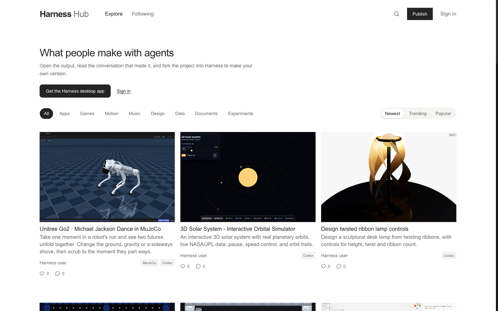
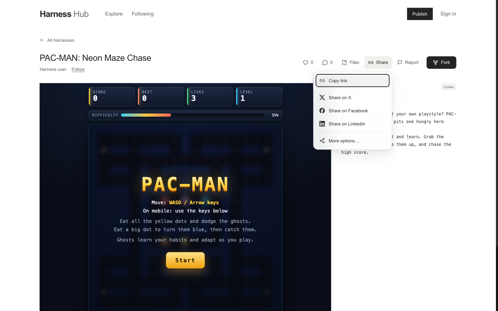
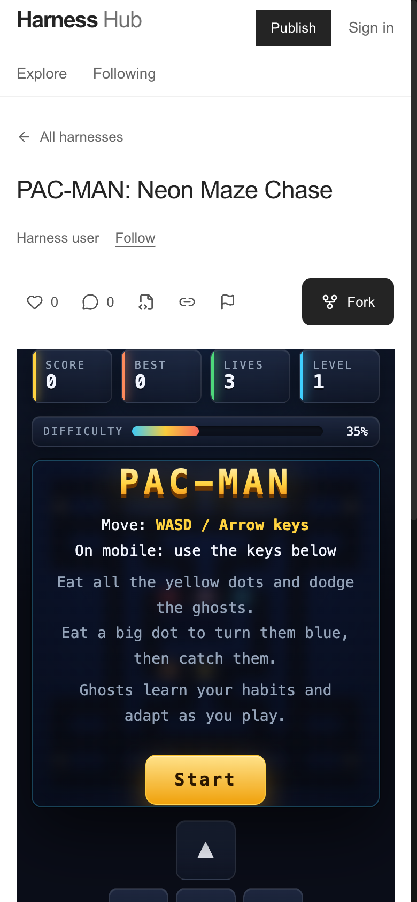
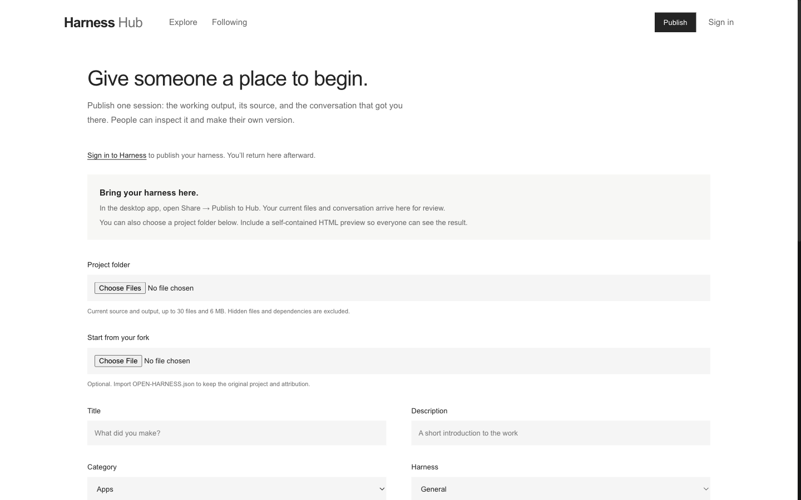
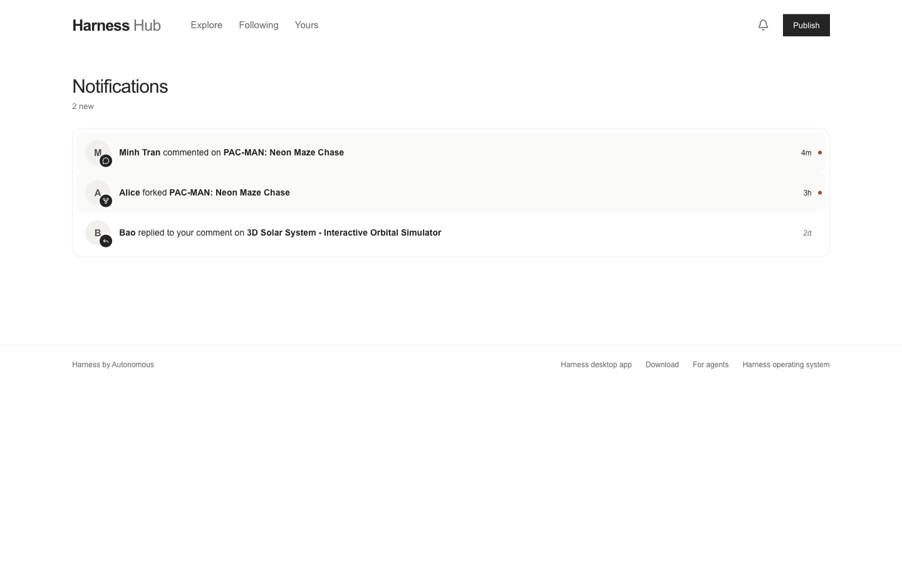

Hub tracking: what readers do, and what we change next
Every counter the Hub sends, pinned on the real pages at harness.autonomous.ai, then how to read the totals and which questions they answer. Counting has been live since v1.2.86_backend and v1.3.56_web on 2026-10-19, 03:36 UTC. The screenshots are production, taken the same day with counting switched off in the test browser.
credentials: 'omit'; the website's server forwards without cookie or sign-in.next dev send nothing.Where a count goes
countHub). Sent every 60 s and when the tab hides.Code: website/src/lib/community/hubMeasure.ts (collector), website/src/app/api/hub-usage/route.ts (forwarder), desktop/lib/measurement/hub_usage.dart (the web app's collector, for shared links), backend/src/lib/hubMetricsContract.ts (the 65 names), backend/src/analytics/dailyHubUsage.ts (report). The website's copy of the names is checked against the backend's by hubMetrics.spec.ts, the web app's by hub_usage_contract_test.dart.
1. Explore: what a visitor sees first
The front door. A visitor gets the heading, the desktop app and Sign in; then filters and cards.

1 2 3 4 5 6 7 8 – – –- 1The page drawn
hub_view_feed_visitor·hub_view_feed_memberOnce per navigation, as soon as it is known who reads. The first Hub page of a tab's visit also countshub_entry_direct|search|social|internal|other. - 2Get the Harness desktop app
hub_get_appVisitors only. Leads to /desktop. - 3Sign in (intro)
hub_sign_in_prompt_shown·hub_sign_in_prompt_clickShown is counted once it is known to be a visitor. Shared with every other sign-in prompt (comments, likes, publish). - 4Search
hub_feed_searchOnce each time the settled (debounced) term changes to something non-empty; not the term a link opened with. - 5A category
hub_feed_categoryAny chip but All. - 6Order
hub_feed_sort_newest|trending|popularEvery click, including the one already chosen. - 7Open a card
hub_card_openThe cover or title. The next page then counts its own view. - 8Like from a card
hub_likeCounted when the like is sent (a member, or a browser holding a sign-in). A visitor gets the sign-in toast instead, which counts as a prompt shown. - –Not countedThe card's comments and forks links (they arrive as a harness view), the header's Publish (arrives as a publish view) and Sign in, and scrolling.
hub_feed_morecounts each further page, by scroll or button, on every feed (Following, Yours, a creator, a harness's forks).
2. A harness: the page that should lead to a fork
Share is open so its rows show. Fork on a computer hands the project to the desktop app; "Need the app?" appears under it after the click.

1 2 3 4 5 6 7 7 7 8 9 10 11 12- 1The page drawn
hub_view_harness_visitor|memberAlso the entry, when a shared link is the first page of the visit. - 2Like
hub_likeMembers, once the reader is known (the button waits). Unlike counts too. - 3Comments
hub_comments_open·hub_comment_postOpening the panel by its button (a?comments=1link opens it without counting); a comment or reply that was saved. - 4Files
hub_files_open - 5Share
hub_share_openBy click, or ↓ on the button. - 6Copy link
hub_share_copy - 7X · Facebook · LinkedIn
hub_share_x|facebook|linkedinOpens the network's share page in a new tab. Whether the post was made is not known. - 8More options…
hub_share_sheetOnly where the browser has a share sheet. - 9Report
hub_reportA submitted report, of the harness or of a comment. - 10Fork
hub_fork·hub_fork_need_appThe click that opens the desktop app; then the "Need the app?" link under it. Whether the app opened is not known. - 11Follow
hub_followFollow or unfollow, here and on a creator's page. - 12Time in view
hub_harness_dwell_under_10s|10s_to_1m|over_1mVisible time only, once per view, as it is left (another page or the tab closing). Full screen, below this frame, countshub_fullscreenon entering.
2b. On a phone: Fork goes to the fork page

2 3 4 5 9 10 11 12Same counters, one difference. On a touch screen with no fine pointer, Fork is a link to /hub/…/fork: it still counts hub_fork, and the fork page counts hub_view_fork_*. There, "Copy link for your computer" replaces "Open in Harness" and is not counted again.
What this cannot tell apart: a computer's Fork from a phone's. No counter is split by device. The nearest signal is hub_view_fork against hub_fork: on a computer Fork rarely opens the fork page (only through "Need the app?"), so a fork-page view is mostly a phone's tap or a missing app.
Labels hide under 480 px: Files, Share and Report show icons only; their counters are unchanged.
3. Publish and notifications

1 21 hub_view_publish_*. 2 the sign-in prompt, shown and clicked. Below the fold, Publish or Save changes counts hub_publish_started, then hub_publish_ok or hub_publish_failed.

1 –1 hub_view_notifications_*. A row is not counted: it arrives as a harness view. (Rows are sample data drawn in the test browser.)
A creator's page counts hub_view_creator_*, its Follow hub_follow, and its cards like Explore's.
4. A shared link: someone's live harness
harness.autonomous.ai/s/<id>#key=… is the web app (Flutter), not the Hub's pages, but it counts the same way and through the same /api/hub-usage. The link, its key, the harness and its owner are never sent. A staging link (?env=stag) or account, a debug build and the desktop app send nothing.
- 1The page drawn
hub_view_shared_visitor|memberOnce per page, as soon as the app knows whether the reader is signed in. - 2What the link showed
hub_shared_open_live|offline|private|no_access|failedEach at most once per page: an offline owner's reconnects every 10 s add nothing, and offline then live counts both.private: a private link before sign-in.no_access: not invited, or the link stopped.failed: an incomplete link, a changed owner identity, or no connection. - 3A live viewer drew
hub_shared_viewer_shownOnce, on its first frame: the harness shows a picture (Blender, slides, a site), not only a terminal. - 4Comments
hub_shared_comments_open · hub_shared_comment_postThe panel opened by its button; a comment saved. - 5Sign in
hub_shared_sign_in_clickOn a private link, or under the comments. - 6Retry
hub_shared_retryAfter offline, a failure, or a dropped connection. - 7Leaving for the product
hub_shared_get_app · hub_shared_product_pageDownload app; the Harness mark (the product page, in a new tab). - 8Time in view
hub_shared_dwell_under_10s|10s_to_1m|over_1mFrom the first live answer until the page goes, hidden time not counted; once per page.
No entry is counted here: where shared links are pasted (chat apps, mail) mostly sends no referrer, and its visits would blur the Hub's own hub_entry_*.
Every counter
The 65 names the backend accepts (HUB_METRICS). Nothing else can be sent: an unknown name refuses the report.
| Counter | When it counts | Where |
|---|---|---|
| Views · 14 | ||
hub_view_{page}_{visitor|member} | A page drawn, once per navigation, after the reader is known. Pages: feed (Explore, Following, Yours), creator, harness, publish, notifications, fork, shared (a shared link, section 4). | useHubView |
| Entry · 5 | ||
hub_entry_{direct|search|social|internal|other} | The first Hub page of a tab's visit, classed from the referrer's host in the browser. Search: Google, Bing, DuckDuckGo and similar. Social: X, Facebook, LinkedIn, Reddit, Hacker News, Threads, Bluesky, YouTube, Discord, Telegram, Instagram. Internal: another page of harness.autonomous.ai. | countHubEntry |
| Feeds · 7 | ||
hub_feed_search | A settled search term, each change. | Feed |
hub_feed_category | A category chip other than All. | Feed |
hub_feed_sort_{newest|trending|popular} | An order clicked. | Feed |
hub_feed_more | Each further page, by scroll or button, on any feed. | useFeed |
hub_card_open | A card's cover or title. | FeedCard |
| A harness · 15 | ||
hub_like | A like or unlike sent, from a card or the page. | useFeed, useHarnessDetail |
hub_comments_open · hub_files_open | The panel opened by its button. | Detail |
hub_comment_post | A comment or reply saved. | useHarnessDetail |
hub_fullscreen | Entering full screen. | Viewer |
hub_share_open | The Share menu opened. | ShareMenu |
hub_share_{copy|x|facebook|linkedin|sheet} | A Share row chosen. | ShareMenu |
hub_fork | Fork: the desktop handoff on a computer, the fork-page link on a phone. | ForkButton |
hub_fork_need_app | "Need the app?" after Fork. | ForkButton |
hub_follow | Follow or unfollow (harness page, creator page). | useHarnessDetail, useCreator |
hub_report | A report submitted (harness or comment). | useHarnessDetail |
| Accounts and publishing · 6 | ||
hub_sign_in_prompt_shown | Any sign-in prompt drawn: comments, the like toast, publish, notifications, Following, and Explore's intro for a visitor. | SignIn, ExploreIntro |
hub_sign_in_prompt_click | Its Sign in link. | SignIn, ExploreIntro |
hub_get_app | Explore's "Get the Harness desktop app". | ExploreIntro |
hub_publish_started|ok|failed | Publish or Save changes submitted, and how it ended. | publish/page |
| Time on a harness · 3 | ||
hub_harness_dwell_{under_10s|10s_to_1m|over_1m} | Visible time of one harness view, as it is left. | useHarnessDwell |
| A shared link · 15 | ||
hub_shared_open_{live|offline|private|no_access|failed} | What the link showed, each once per page. | SharedAgentPage |
hub_shared_viewer_shown | Its live viewer's first frame. | SharedHarnessPanel |
hub_shared_comments_open · hub_shared_comment_post | Comments opened by the button; a comment saved. | SharedHarnessPanel |
hub_shared_sign_in_click · hub_shared_retry | Sign in (private link, comments); Retry (page or panel). | SharedAgentPage, SharedHarnessPanel |
hub_shared_get_app · hub_shared_product_page | Download app; the Harness mark. | SharedAgentPage |
hub_shared_dwell_{under_10s|10s_to_1m|over_1m} | Visible time from the first live answer until the page goes. | VisibleTime |
Reading it
cd backend DATABASE_URL=<read-only> npm run usage:daily -- 14 # keep output in .harness/usage/, never commit it
The hub section gives a status for the window (collected or not collected), then per UTC day (a day with no Hub report is null, not zero): views by page and reader, entries, every action, dwell, and two ratios kept as numerator / denominator / ratio: forkClicksPerHarnessView and signInClicksPerPromptShown. Today is partial; compare complete seven-day windows.
First complete window: 2026-10-20 to 2026-10-26. 2026-10-19 is the release day and partial, and a handful of its Explore views came from this review's Lighthouse and performance runs before counting was switched off in the test browser.
The questions, and what would change
Each one names its numbers before we look, so the decision is not picked after the fact (see the daily review in docs/product-measurement.md).
| Question | Numbers | If so, change |
|---|---|---|
| Does a visitor find something to open? | hub_card_open ÷ hub_view_feed_visitor | Low: a featured row or starters above the fold; Trending as the visitors' default order. |
| Is Trending or Popular wanted over Newest? | hub_feed_sort_trending + _popular against views; card opens per view before and after a default change | Most sessions that sort leave Newest: make that the default. |
| Does the intro bring people in? | hub_get_app, hub_sign_in_prompt_click ÷ hub_sign_in_prompt_shown | Few clicks: shorten the intro, or show it only on a first visit (hub_entry_* says how many are first visits). |
| Does a harness page lead to a fork? | forkClicksPerHarnessView; hub_fork_need_app ÷ hub_fork | Many "Need the app?": the handoff fails for most; put the install path before Fork. |
| Do phone readers get anywhere? | hub_view_fork_* against hub_fork | Fork pages viewed but no later fork: offer "send to my computer" (email the link) instead of copy. |
| Do people stay? | Dwell buckets, against hub_view_harness | Mostly under 10 s: the output loads slowly or the page does not say what it is; look at output load and the first screen. |
| How do people share, and does it bring readers? | hub_share_* by row; hub_entry_social over time | Copy dominates: keep it first. Social entries flat: preview images and titles (link previews were fixed in v1.3.58_web). |
| Do readers talk? | hub_comments_open, hub_comment_post, prompts shown in comments | Opens but no posts: a prompt or example question in the empty panel. |
| Does a shared link reach a live harness? | hub_shared_open_live against hub_view_shared_*; _offline, _private, _no_access, _failed | Mostly offline: show the owner's last output while their machine is away. Many private before sign-in, few hub_shared_sign_in_click: say who invited the reader and why to sign in. |
| Does a shared link bring people to Harness? | hub_shared_get_app + hub_shared_product_page ÷ hub_view_shared_visitor; hub_shared_dwell_* | Long dwell, few clicks: a "make one like this" call to action beside the live harness. |
| Does search work? | hub_feed_search followed by hub_card_open (same days) | Searches with few opens: search creators too (the placeholder promises it), fuzzy matching. |
Limits
Not people: a reader who reloads counts two views; one who opens ten harnesses, ten. Entry is once per tab visit (session storage), so it is the closest to visits.
Not a funnel: a fork cannot be traced back to the card that led to it. Ratios compare totals on the same days.
Absent readers: GPC and Do Not Track browsers, members with sharing off, staging accounts, ad and script blockers that stop /api/hub-usage.
Lost counts: a tab that is killed before it hides, a failed send (never retried), and anything over the backend's 240 reports a minute per process, which is about 200 tabs open at once. TODO(BE): past that, add reports up on the website's server and send one a minute.
Fabricable: the endpoint is public. Treat a sudden jump on one counter as suspect until it shows on others.
No device split: phone and computer are only told apart through the fork page (2b).
To optimize, found while making this page
| What | Evidence | Fix | |
|---|---|---|---|
| decide | A Google Ads tag runs on every Hub page | Requests to googleads.g.doubleclick.net, google.com/rmkt/collect and /ccm/collect for AW-943247754, served through the first-party path /kaxv/ (Cloudflare's Google tag gateway, not in the repo); third-party cookies test_cookie, IDE. Lighthouse Best Practices: 77. | Whoever owns Cloudflare and ads decides: leave it off /hub, or say so in product-measurement.md, which now promises no cookies. It also ignores GPC. |
| P1 | Covers weigh too much | Starter covers are PNGs of ~600 KB (ribbon-lamp 615 KB, two-futures 606 KB); a publication's cover is 1775 px wide where a phone shows ~380 px. About 424 KB wasted on a phone's first screen. LCP is still 1.6 s on throttled 4G. | Resize to 1200 px and serve WebP, with a 1200 px PNG kept for link previews. |
| P1 | Card labels hide their text from screen readers | Lighthouse label-content-name-mismatch, 67 nodes: the card link, Like and Comments use aria-label, which replaces the description and counts. | aria-labelledby the title, and keep the counts visible to the name. |
| P2 | Publish does not line up with the header | Its content starts at 157 px against the header's 115 px at 1440 px (screenshot 3); the fork page too. | Use the header's width (.wrap) as Notifications does. |
| P2 | The footer floats mid-page on short pages | Notifications with three rows: footer at 551 px of 900. | Keep the footer at the bottom of the viewport on short pages. |
| P2 | From the earlier review | A comment notification does not jump to its comment; no way to find creators; "All harnesses" loses filters and scroll; headings vary from 25 to 38 px; a few links still use the raw id (reports, fork notifications, download); unused CSS (.steps). | |
First reading · 2026-10-19
Production totals from 03:36 UTC (release) to 08:42 UTC, about five hours. Read straight from the daily totals (hub_* rows), since npm run usage:daily currently fails on production (see below).
| Counter | Total | Reading |
|---|---|---|
hub_view_feed_visitor | 8 | About 3 are this review's own audits (Lighthouse, a network listing, a performance trace), run before counting was switched off in the test browser. About 5 are real. |
hub_view_harness_visitor | 5 | All visitors; no member view yet. |
hub_entry_direct | 7 | Every entry was direct, none from search or social yet. Includes the audits'. |
hub_sign_in_prompt_shown | 11 | Mostly Explore's intro, shown on each visitor view. |
hub_get_app | 1 | One click on "Get the Harness desktop app". |
hub_harness_dwell_under_10s | 5 | Every harness view left in under ten seconds. |
| everything else | 0 | No card open, like, comment, share, fork, search or sort. |
Too few to decide anything. The one signal to watch: all five harness views ended under ten seconds with no action. If that holds over the first full week, start from "Do people stay?" above: how fast the output appears, and whether the first screen says what the harness is and what Fork does.
To fix: npm run usage:daily exits with "Could not read aggregate product usage" against production. The Hub rows read fine with a direct query, so the failure is elsewhere in the report and its catch hides the cause.
Next readings: daily from 2026-10-20, the first clean day; the first complete week (2026-10-20 to 10-26) on 2026-10-27.
Decided
Collection: visitors are counted (decided 2026-10-19), with no cookie, identifier, URL or content, through the website's server; the one web exception to signed-out collection, recorded in docs/product-measurement.md.
Released: v1.2.86_backend (endpoint and report) and v1.3.56_web (collector and the review's fixes) on 2026-10-19; v1.3.58_web fixed link previews and removed Open Harness from the signed-in bar. Checked in production: the backend reports v1.2.86_backend, the endpoint refuses credentials (400), /api/hub-usage answers POST only, robots.txt allows covers.
Next review: 2026-10-27, on the first complete week (2026-10-20 to 10-26). Then pick one question above, write its hypothesis and guardrails, change one thing, and compare equal windows.
Still open: the Google Ads tag; cover weight; card labels.